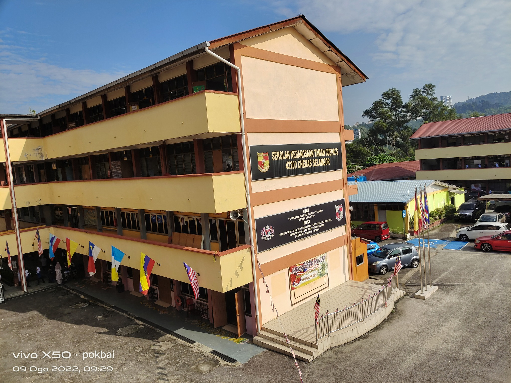
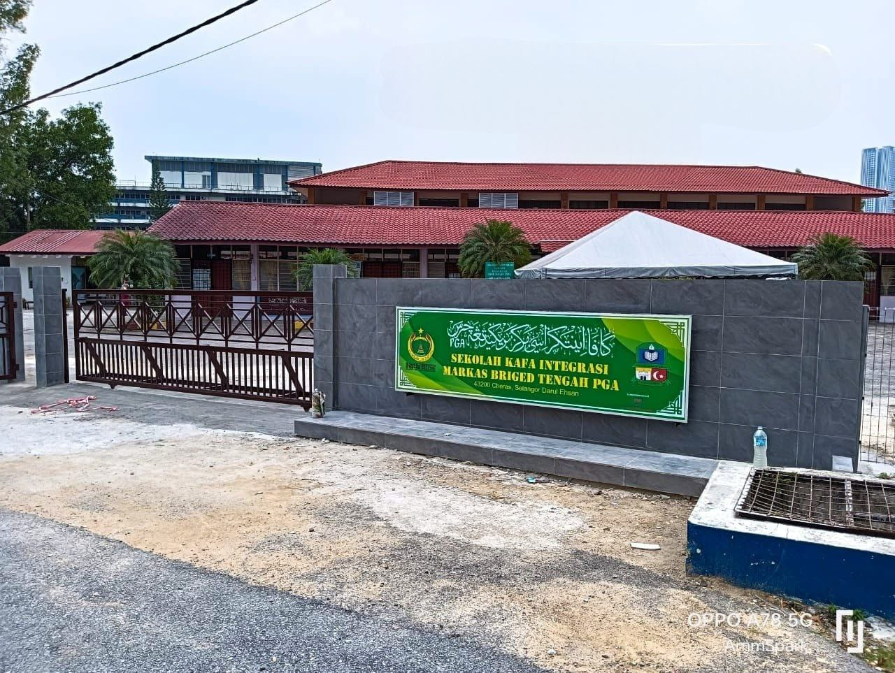
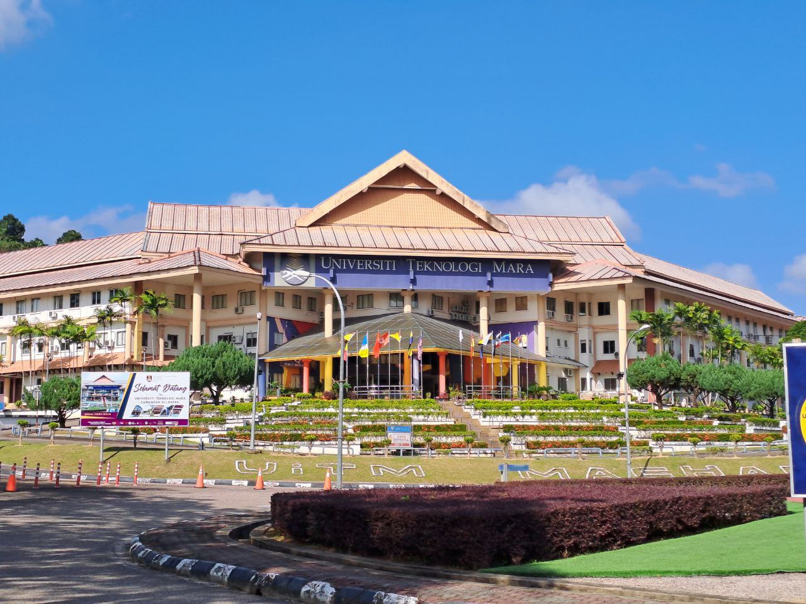

ACCOMPLISHMENT

SEKOLAH KEBANGSAAN TAMAN CUEPACS (2011-2016)
- Handball Club Secretary 2012
- Hulu Langat District Level Percussion Instrument Competition (Level 2) and Music and Movement (Level 1) 2013
- Class Leader Award 2013
- Bronze Award Flower Stand Competition (Primary School) 2016
- Prefect Treasurer 2016
- Squad Leader of Pergerakan Puteri Islam 2016
- Vice Chairman Of School Crime Prevention Club 2016
- Jawhite Level Sapphire Program (Bronze Medal) 2016

SEKOLAH KAFA INTEGRASI MARKAS BRIGED TENGAH PGA (2011-2016)
- Islamic Practical Skills For Religious Primary Schools (KAMIL) Langat Zone Level 2015
- Prefectorial Board Kafa Integrasi Markas Briged Tengah PGA Cheras 2013-2016

SEKOLAH MENENGAH KEBANGSAAN BANDAR BARU SUNGAI LONG (2017-2021)
- Best Student Award For The Entire Grade One 2017
- Meritorious Student Quality Award 2017
- Secretary Islamic Education Association 2018
- Meritorious Student HEM Quality Award 2019
- Hulu Langat District Secondary School Police Cadet Corps Camp (IPD KAJANG) 2019

UNIVERSITI TEKNOLOGI MARA (2023-RECENT)
- Dean's Award Session 1 2022/2023
- Active Member of the ORC Club
- Participant of the ILP Student Development Program
- Participant of the Outreach Class on Records and Archives Management Research
- Participant of the Library Briefing at Perpustakaan Tengku Anis (PTA)